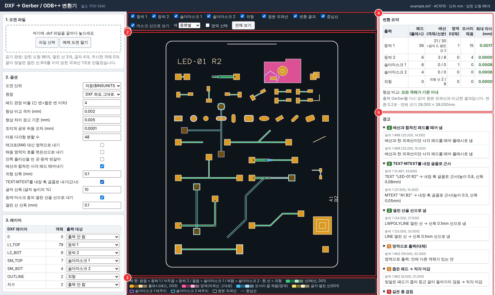
오토캐드에서 저장한 .dxf 도면을 열어, PCB 제작용 Gerber(RS-274X, .gbr) 또는 ODB++ 파일로 바꿔 내려받는 프로그램입니다.
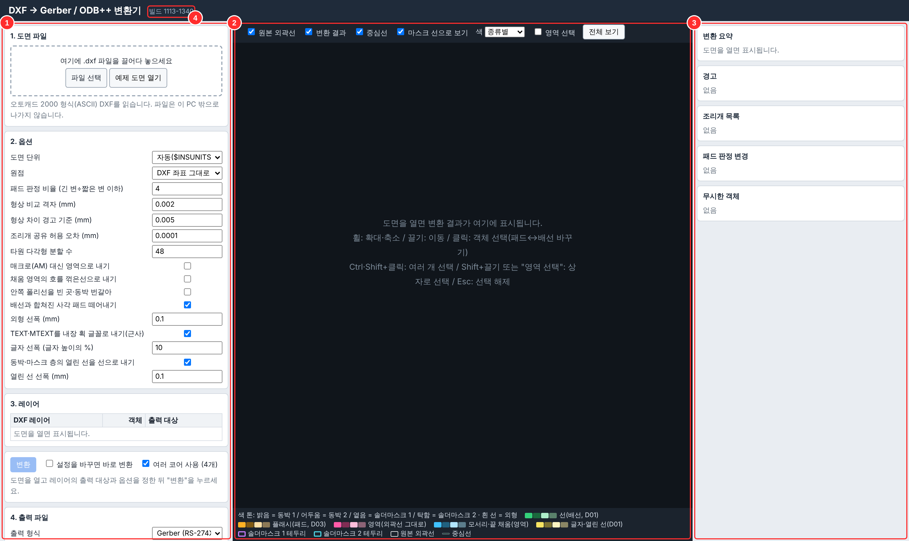
| 표시 | 내용 |
|---|---|
| 1왼쪽 | 작업 순서대로 놓인 네 묶음: 1. 도면 파일 → 2. 옵션 → 3. 레이어(아래에 변환 버튼) → 4. 출력 파일. 화면이 낮으면 왼쪽 부분만 따로 스크롤됩니다. |
| 2가운데 | 미리보기. 위에는 보기 설정 줄, 아래에는 색 범례와 마우스 위치 좌표가 있습니다. |
| 3오른쪽 | 변환 요약, 경고, 조리개 목록, 패드 판정 변경, 무시한 객체. |
| 4빌드 | 제목 옆 “빌드 MMDD-HHMM”. 프로그램 판을 구분하는 번호입니다. 이 설명서는 빌드 — 기준입니다. |
| 항목 | 조건 |
|---|---|
| 배선과 패드 | 모두 폭 0인 닫힌 폴리선(외곽선)으로 그립니다. 폭이 있는 폴리선은 폭을 무시하고 외곽선만 쓰며 경고에 표시됩니다. |
| 패드 | 배선과 따로 그린 객체이고, 배선은 패드 변에 맞닿게 그립니다. 패드와 배선을 한 폴리선으로 그린 경우에도 직각 사각 패드(0°/90°)는 자동으로 떼어 냅니다(7.4절). |
| 배선 모양 | 뾰족한 꺾임, 둥근 꺾임(R), T자 같은 분기, 폭이 바뀌는 곳(계단·테이퍼) 모두 처리합니다. |
| 층 구분 | DXF 레이어로 구분합니다. 동박 2층, 솔더마스크 2층, 외형 1층까지 출력할 수 있습니다. |
| 겹침 | 같은 층 안에서는 객체가 겹치지 않아야 합니다(겹치면 경고만 냅니다). 서로 다른 층끼리 겹치는 것은 정상이며 검사하지 않습니다. |
| 솔더마스크 | 그린 도형이 곧 개구부(열리는 곳)이며, 그대로 출력합니다. |
| 도면 객체 | 처리 |
|---|---|
| 닫힌 폴리선(LWPOLYLINE, POLYLINE) | 패드 또는 배선 후보. 호(bulge) 구간 포함. |
| 원(CIRCLE), 닫힌 타원(ELLIPSE) | 원 패드, 타원 패드(타원은 다각형으로 근사). |
| SOLID, 솔리드 채움 HATCH의 경계 | 영역. |
| 선(LINE), 호(ARC), 열린 폴리선 | 같은 레이어에서 끝이 맞닿으면 이어서 닫힌 외곽선으로 만듭니다. 끝내 열린 것은 외형 층에서는 선으로, 동박·솔더마스크 층에서는 옵션에 따라 선으로 냅니다(7.6절). |
| 글자(TEXT, MTEXT, 보이는 속성) | 출력 대상 층에 있으면 옵션에 따라 프로그램 안의 단순한 글꼴로 그립니다(7.6절). |
| 블록 삽입(INSERT) | 이동·회전·배율·배열·좌우 반전을 적용해 펼칩니다. |
| 치수(DIMENSION), 무늬 HATCH, 타원·스플라인 경계 HATCH, 열린 타원 호, 그 밖의 객체 | 출력하지 않습니다. 오른쪽 무시한 객체에 종류·레이어·위치가 나옵니다. “출력 안 함”으로 둔 레이어의 글자와 열린 선도 여기에 나옵니다. 꼭 나와야 하는 객체가 이 목록에 있지 않은지 확인해 주세요. |
도면을 열어 내려받기까지의 순서입니다. 처음이라면 예제 도면 열기로 먼저 따라 해 보시기 바랍니다.
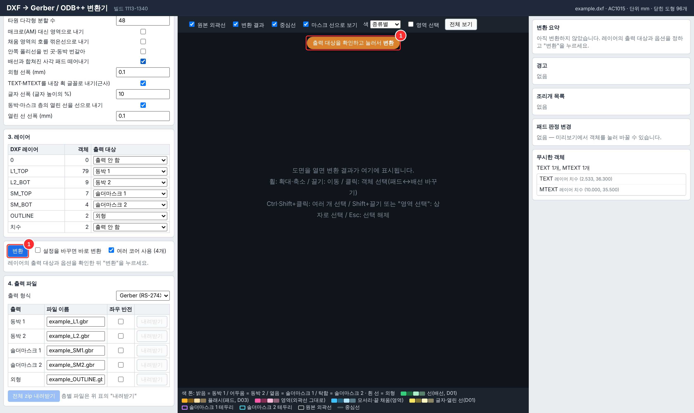
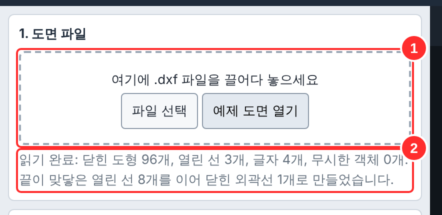
1 점선 칸에 .dxf 파일을 끌어다 놓거나 파일 선택을 누릅니다. 예제 도면 열기는 프로그램에 들어 있는 연습용 도면을 엽니다.
2 읽은 결과입니다. 닫힌 도형, 열린 선, 글자, 무시한 객체의 개수가 나옵니다. 끝이 맞닿은 열린 선을 이어 닫힌 외곽선으로 만들었으면 그 개수도 알려 줍니다.
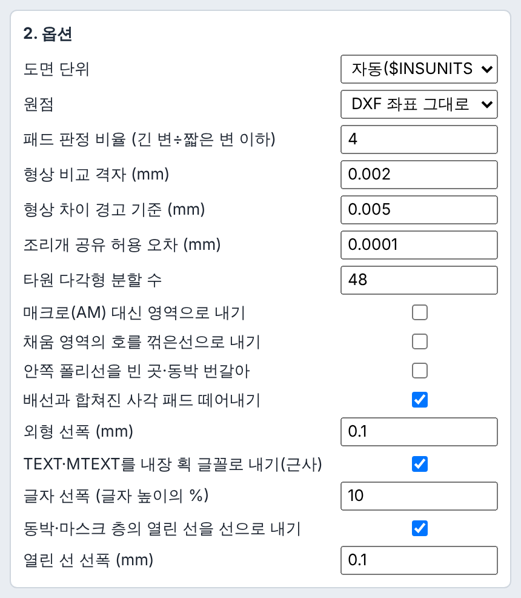
옵션 이름 위에 마우스를 올리면 짧은 설명이 나오는 항목이 있습니다. 옵션을 바꾼 뒤에는 변환을 눌러야 결과에 반영됩니다(4.4절).
| 옵션 | 기본값 | 뜻과 바꿀 때 |
|---|---|---|
| 도면 단위 | 자동($INSUNITS, 없으면 mm) | 도면 좌표의 단위. 도면에 단위가 적혀 있지 않거나 틀리게 적혀 있어 크기가 25.4배 다르게 나올 때 mm 또는 inch로 직접 고릅니다. 화면 오른쪽 위에 적용된 단위가 표시됩니다. |
| 원점 | DXF 좌표 그대로 | 출력 좌표의 기준. “전체 좌측 하단 = 0,0”을 고르면 출력 대상 전체의 왼쪽 아래 구석이 0,0이 되도록 모든 층을 같이 옮깁니다. |
| 패드 판정 비율 (긴 변÷짧은 변 이하) | 4 | 사각형을 패드로 볼 기준. 긴 변÷짧은 변이 이 값 이하이면 패드 후보입니다. 길쭉한 패드가 배선으로 판정되면 값을 키우고, 짧은 배선 토막이 패드로 판정되면 줄입니다. 몇 개만 틀리면 옵션을 바꾸는 대신 미리보기에서 눌러 바꾸는 편이 안전합니다. |
| 형상 비교 격자 (mm) | 0.002 | 원본과 결과의 모양을 비교할 때의 촘촘함. 작을수록 정밀하지만 오래 걸립니다. 보통 그대로 둡니다. |
| 형상 차이 경고 기준 (mm) | 0.005 | 원본과 결과의 차이가 이 값을 넘으면 경고합니다. 배선은 이 값을 넘으면 자동으로 영역 출력으로 바뀝니다. |
| 조리개 공유 허용 오차 (mm) | 0.0001 | 크기 차이가 이 값 이내인 패드·선폭은 같은 조리개(D코드)를 씁니다. 조리개 목록이 미세한 크기 차이로 지나치게 많아질 때 키웁니다. |
| 타원 다각형 분할 수 | 48 | 타원 패드를 몇 각형으로 근사할지. “타원 근사 오차” 경고가 나오면 늘립니다. |
| 매크로(AM) 대신 영역으로 내기 | 꺼짐 | 회전된 사각형·회전된 오블롱·둥근 모서리 사각형·타원 패드는 조리개 매크로로 냅니다. CAM이 매크로를 읽지 못하거나 모양이 틀리게 보일 때 켜면 이런 패드를 영역으로 냅니다. |
| 채움 영역의 호를 꺾은선으로 내기 | 꺼짐 | 둥근 꺾임(R) 배선의 모서리 채움은 호로 적어 파일을 줄입니다. CAM이 영역 안의 호를 잘못 읽을 때 켭니다(파일이 커집니다). |
| 안쪽 폴리선을 빈 곳·동박 번갈아 | 꺼짐 | 다른 객체 안에 그려진 폴리선을 바깥 객체와 반대로 처리합니다(동박 → 빈 곳 → 동박 …). 동박면의 구멍이나 글자 속 구멍을 폴리선으로 그린 도면에서 켭니다. 꺼 두면 안쪽 폴리선은 모두 동박이며, 객체마다 눌러서 바꿀 수 있습니다(5.5절). |
| 배선과 합쳐진 사각 패드 떼어내기 | 켜짐 | 패드와 배선이 한 폴리선이면 직각 사각 패드를 떼어 플래시로 냅니다. 패드가 아닌 곳이 떼어져 곤란할 때 끕니다(7.4절). |
| 외형 선폭 (mm) | 0.1 | 외형 층의 선을 그리는 둥근 조리개의 지름. |
| TEXT·MTEXT를 내장 획 글꼴로 내기(근사) | 켜짐 | 출력 대상 층의 글자를 프로그램 안의 단순한 글꼴(영문·숫자·기호)로 그려 선으로 냅니다. 글자가 나오면 안 되는 도면에서는 끕니다. 글자 모양이 오토캐드와 똑같아야 하면 7.6절을 보세요. |
| 글자 선폭 (글자 높이의 %) | 10 | 위 글자의 선폭. 글자 높이 1mm이면 선폭 0.1mm. |
| 동박·마스크 층의 열린 선을 선으로 내기 | 켜짐 | 동박·솔더마스크 층에 남은 열린 선(선, 호, 열린 폴리선. 예: 오토캐드에서 분해한 글자)을 둥근 조리개 선으로 냅니다. 끄면 무시한 객체 목록에 남습니다. |
| 열린 선 선폭 (mm) | 0.1 | 위 열린 선의 선폭. |
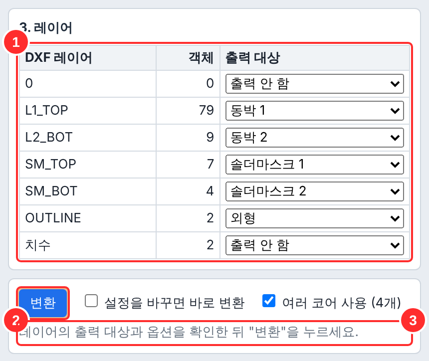
1 DXF 레이어마다 읽은 객체 수와 출력 대상이 나옵니다.
2 변환 버튼(4.4절).
3 지금 무엇을 해야 하는지, 변환 뒤에는 걸린 시간을 알려 주는 안내 글.
| 출력 대상 | Gerber 파일 이름(기본) | 내용 |
|---|---|---|
| 동박 1 | 원본이름_L1.gbr | 배선은 선, 패드는 플래시, 나머지는 영역. |
| 동박 2 | 원본이름_L2.gbr | |
| 솔더마스크 1 | 원본이름_SM1.gbr | 그린 도형 = 개구부. 패드 모양은 플래시, 나머지는 영역. |
| 솔더마스크 2 | 원본이름_SM2.gbr | |
| 외형 | 원본이름_OUTLINE.gbr | 닫힌 외곽선과 열린 선을 “외형 선폭”의 선으로 따라 그립니다. |
| 출력 안 함 | — | 출력하지 않습니다(치수, 부품 외곽 등). |
도면을 열면 레이어 이름을 보고 아래처럼 추정합니다. 추정일 뿐이므로 표를 반드시 확인하고, 틀리면 직접 고르세요.
| 출력 대상 | 이렇게 추정합니다 |
|---|---|
| 솔더마스크 1·2 | 이름에 mask, solder, 마스크, 레지스트가 있거나 SM이 따로 떨어진 낱말로 있는 레이어. 둘이면 이름에 bot, bottom, 하면, 뒷면이 있거나 2로 끝나는 쪽이 솔더마스크 2. |
| 외형 | 이름에 outline, 외형, board, border, edge, profile이 있는 첫 레이어(zone, limit, trace가 든 이름은 제외). |
| 동박 1·2 | 이름에 copper, 동박, 배선, 패턴이 있거나 cu, top, bot, bottom, L1~L9가 따로 떨어진 낱말로 있는 레이어 중 앞의 둘(pad가 든 이름은 제외). 그런 이름이 하나도 없으면, 보조용으로 보이는 이름(outline, zone, limit, body, text, info, dim, border, frame, 외형, 치수, 부품, 레이어 “0”)을 뺀 나머지 중 앞의 둘. |
| 출력 안 함 | 그 밖의 레이어와 객체가 없는 레이어. |
레이어 지정, 옵션, 좌우 반전, 출력 형식을 바꿔도 바로 변환하지 않습니다. 큰 도면에서 설정 하나를 바꿀 때마다 기다리지 않도록, 다 정한 뒤 변환을 한 번 누르는 방식입니다.
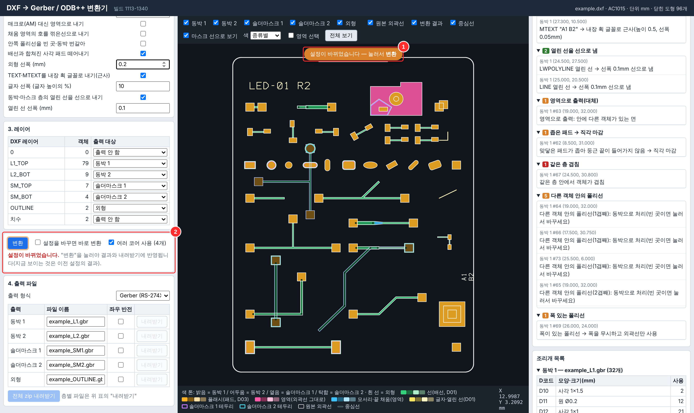
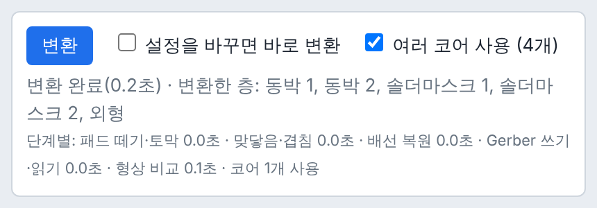
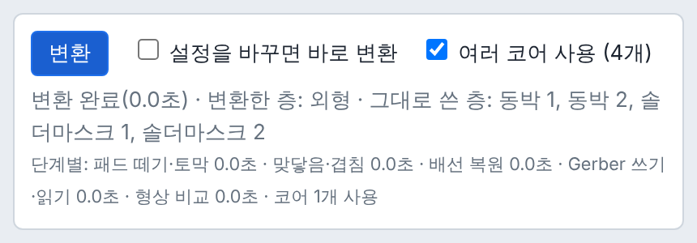
단계별 시간은 어디에서 시간이 걸리는지 보여 줍니다: 패드 떼기·토막 / 맞닿음·겹침 / 배선 복원 / Gerber 쓰기·읽기 / 형상 비교. 문의하실 때 이 줄을 알려 주시면 도움이 됩니다.
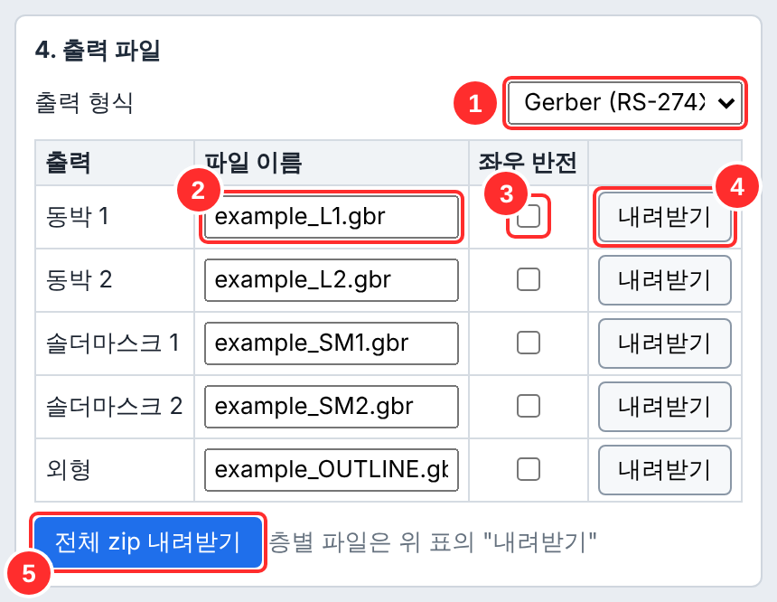
1 출력 형식: Gerber (RS-274X) 또는 ODB++.
2 파일 이름: 고쳐 쓸 수 있습니다. 이름을 바꾸는 것은 다시 변환할 필요가 없습니다.
3 좌우 반전: 그 출력만 좌우로 뒤집습니다(바꾸면 변환 필요).
4 내려받기: 그 층의 .gbr 파일 하나.
5 전체 zip 내려받기: 변환된 층 전부를 “원본이름_gerber.zip” 하나로.
Gerber 출력의 형식은 다음과 같습니다.
%FSLAX46Y46*%, %MOMM*%).%TF, %TA, %TO)과 반복 배치(%SR)는 쓰지 않습니다.%LPC*%)으로 냅니다.출력 형식을 ODB++로 바꾸면 파일 이름 칸과 층별 내려받기가 사라지고 ODB++ 묶음이 나타납니다. 형식을 바꾼 뒤에는 변환을 다시 눌러야 합니다. 자세한 내용은 8장에 있습니다.
| Gerber | ODB++ | |
|---|---|---|
| 파일 | 층마다 .gbr 하나, 또는 전체 zip | 폴더 구조 한 묶음(.tgz 또는 .zip) |
| 반복 무늬 | 전부 풀어서 적음(큰 도면은 파일이 큼) | 똑같이 반복되는 부분을 스텝 하나로 묶어 반복 배치(파일이 작음) |
| 단위 | mm | inch(7.0) 또는 mm(8.1) 선택 |
| 확인 방법 | 어느 형식이든 변환 결과(선·플래시·영역)는 같고, 미리보기와 형상 비교는 공통입니다. ODB++는 만든 뒤 다시 읽어 변환 결과와 요소 하나하나를 대조한 결과를 추가로 보여 줍니다. | |
미리보기는 출력할 Gerber를 프로그램이 다시 읽어서 그린 것입니다. 즉 화면에 보이는 색칠된 모양이 실제 출력 파일의 내용이고, 그 위에 원본 DXF 외곽선을 흰 선으로 겹쳐 보여 줍니다.
| 조작 | 동작 |
|---|---|
| 마우스 휠 | 마우스가 있는 곳을 중심으로 확대·축소 |
| 왼쪽 버튼으로 끌기 | 화면 이동(“영역 선택”이 켜져 있으면 가운데·오른쪽 버튼으로 끌기) |
| 전체 보기 버튼, 또는 두 번 누르기 | 도면 전체가 보이게 맞춤 |
| 마우스 움직이기 | 오른쪽 아래에 그 위치의 좌표(mm, 출력 좌표)가 표시됨 |
아주 큰 도면에서는 움직이는 동안 직전 화면을 늘려서 보여 주다가, 멈추면 다시 선명하게 그립니다.
| 항목 | 내용 |
|---|---|
| 동박 1 … 외형 | 층별로 켜고 끕니다. 꺼진 층은 눌러도 선택되지 않습니다. 위아래 층이 겹쳐 헷갈릴 때 한 층만 켜 놓고 보세요. |
| 원본 외곽선 | 원본 DXF 외곽선(흰 선). 빈 곳으로 처리한 객체와 중복 객체는 점선. |
| 변환 결과 | 출력 결과(색칠된 면). 끄면 원본만 보입니다. |
| 중심선 | 배선으로 낸 선의 중심선과 양 끝점(짙은 선과 점). 선이 어디서 시작해 어디서 끝나는지 볼 수 있습니다. |
| 마스크 선으로 보기 | 솔더마스크를 속을 채우지 않고 테두리만 보입니다(5.3절). 화면 표시만 바뀌고 출력 파일은 그대로 면입니다. |
| 색 | “종류별”(선·플래시·영역 구분) 또는 “레이어별”(층 구분). |
| 영역 선택 | 켜면 왼쪽 버튼으로 끌어 여러 객체를 고릅니다(5.4절). |
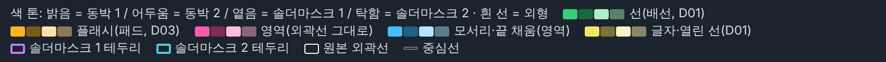
| 색(종류별) | 뜻 |
|---|---|
| 초록 | 선(배선) — 둥근 조리개로 그은 선 |
| 주황 | 플래시(패드) |
| 분홍 | 영역(외곽선 그대로) — 선이나 플래시로 내지 못해 외곽선대로 낸 것 |
| 하늘색 | 모서리·끝 채움(영역) — 배선의 꺾임 모서리, 직각 끝, 폭이 바뀌는 부분을 메우는 작은 영역 |
| 노랑 | 글자·열린 선 |
| 흰 선 | 원본 외곽선, 외형 층의 선 |
자동 판정이 틀렸거나 다르게 내고 싶은 객체는 미리보기에서 눌러 바꿉니다. 누르면 객체 정보 창이 뜹니다.
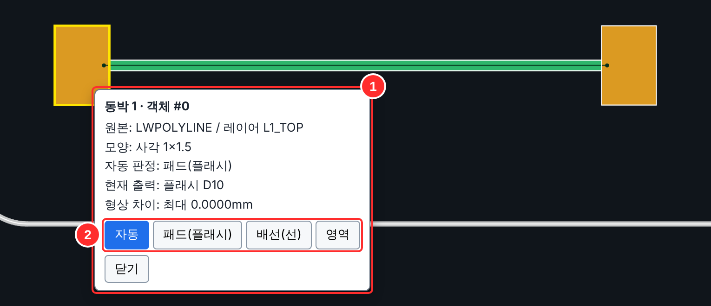
| 버튼 | 동작 |
|---|---|
| 자동 | 프로그램의 자동 판정으로 되돌립니다. |
| 패드(플래시) | 플래시로 냅니다. 패드 모양(사각·원·오블롱·둥근 모서리 사각·타원)으로 인식된 객체에서만 눌립니다. |
| 배선(선) | 둥근 조리개 선으로 냅니다. 선으로 되돌릴 수 있는 객체에서만 눌립니다. |
| 영역 | 외곽선 그대로 영역으로 냅니다. 어떤 객체든 가능하며, 모양이 가장 확실하게 보존됩니다. |
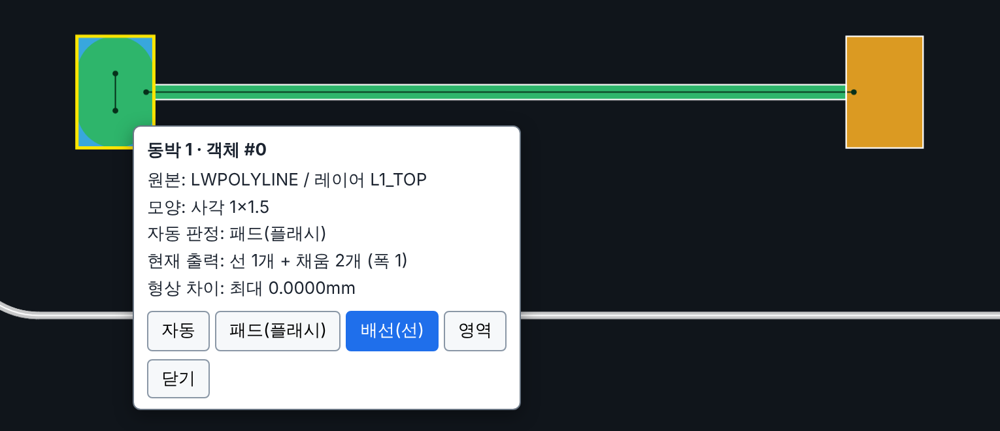
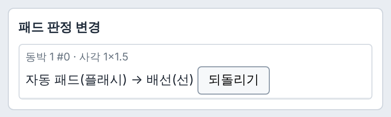
| 조작 | 동작 |
|---|---|
| 누르기 | 하나 선택 |
| Ctrl 또는 Shift를 누른 채 누르기 | 선택에 더하거나 빼기 |
| Shift를 누른 채 끌기, 또는 “영역 선택”을 켜고 끌기 | 상자로 선택. 왼쪽 → 오른쪽으로 끌면 상자 안에 다 들어온 객체만(파란 실선), 오른쪽 → 왼쪽으로 끌면 걸친 객체도(초록 점선) |
| Esc | 선택 해제 |
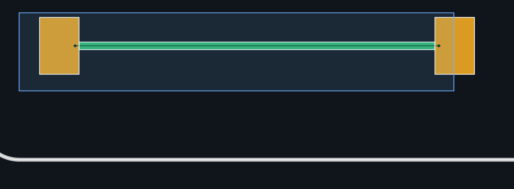
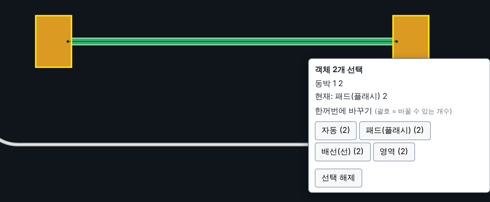
상자 선택은 켜져 있는(보이는) 층의 객체만 고르며, 객체의 둘레 상자를 기준으로 판단합니다. 한꺼번에 바꾼 뒤에도 선택은 유지됩니다.
다른 객체 안에 그려진 폴리선(예: 동박면 안의 원)은 구멍(빈 곳)일 수도, 겹쳐 그린 동박일 수도 있습니다. 프로그램은 이를 마음대로 정하지 않고 기본은 동박으로 두며, 경고 목록 “다른 객체 안의 폴리선”에 올립니다.
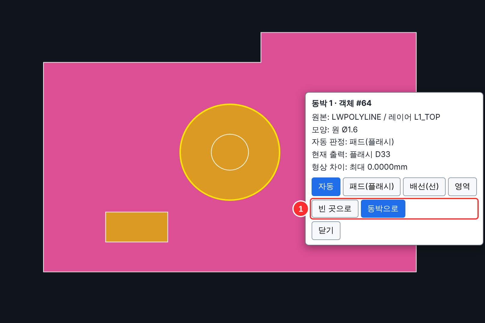
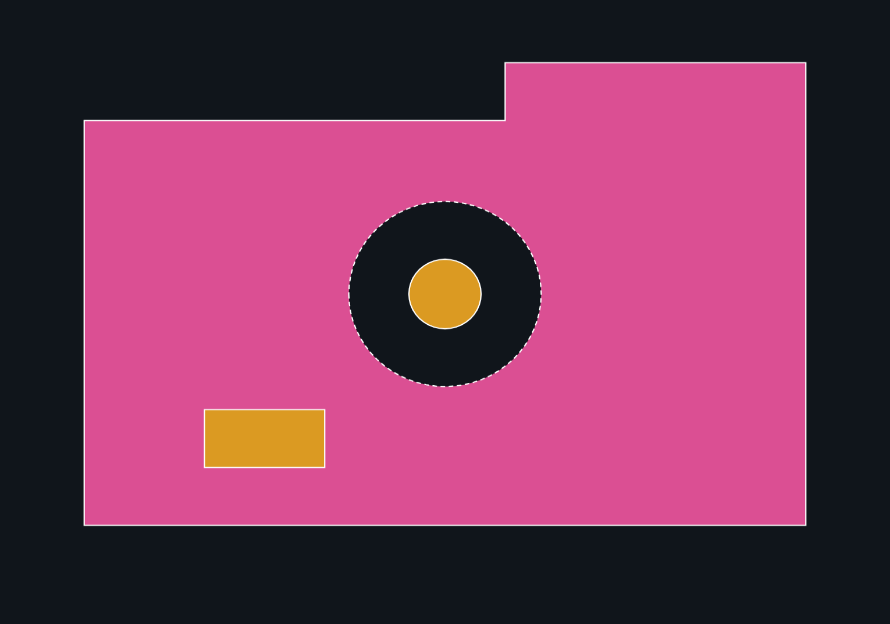
이런 객체가 많으면 옵션 안쪽 폴리선을 빈 곳·동박 번갈아를 켜고 변환하세요. 바깥 객체와 반대로(동박 → 빈 곳 → 동박 …) 한꺼번에 처리하며, 그 뒤에도 객체마다 눌러 바꿀 수 있습니다. 왼쪽은 이 옵션을 켠 3겹 사각형입니다(동박 → 빈 곳 → 동박).
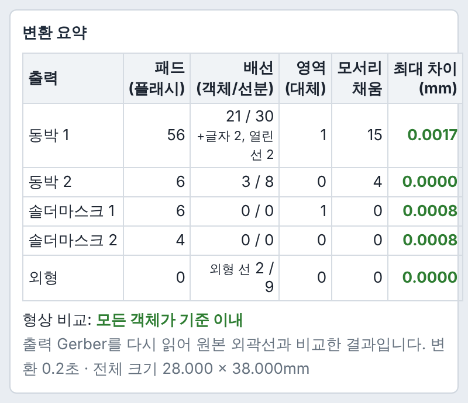
| 열 | 뜻 |
|---|---|
| 패드(플래시) | 플래시로 낸 패드 수. “+영역 n”은 매크로 대신 영역으로 낸 패드. |
| 배선(객체/선분) | 선으로 낸 배선 객체 수 / 그 선분 수. “+글자, 열린 선”은 따로 셉니다. |
| 영역(대체) | 외곽선 그대로 영역으로 낸 객체 수. |
| 모서리 채움 | 배선의 모서리·끝을 메운 작은 영역 수. |
| 최대 차이(mm) | 그 층에서 원본과 결과가 가장 많이 다른 곳의 거리. |
변환이 끝나면 출력 Gerber를 다시 읽어, 객체마다 원본 외곽선과 겹쳐 고운 격자(옵션 “형상 비교 격자”, 기본 0.002mm)로 서로 다른 부분을 찾습니다. 가장 많이 벗어난 거리가 “최대 차이”입니다.
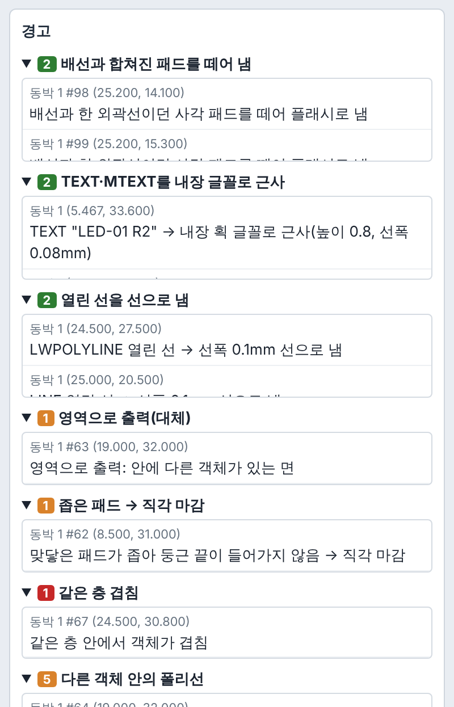
종류별로 묶여 있고, 제목 앞 숫자는 개수입니다. 딱지 색으로 중요도를 구분합니다.
초록 알림: 프로그램이 이렇게 처리했다는 기록
주황 확인: 의도와 맞는지 볼 것
빨강 조치: 도면이나 판정을 고칠 것
항목을 누르면 그 위치로 확대되고 빨간 상자가 잠깐 표시됩니다. 항목의 첫 줄은 층, 객체 번호(#), 위치 좌표입니다. 종류마다 400개까지만 나열합니다.
| 경고 | 뜻 | 조치 |
|---|---|---|
| 알림 배선과 합쳐진 패드를 떼어 냄 | 패드와 배선이 한 폴리선이어서 사각 패드를 떼어 플래시로 냈습니다. | 패드가 아닌 곳이 떼어졌으면 그 객체를 눌러 “배선(선)”이나 “영역”으로 바꾸거나, 옵션을 끕니다. |
| 알림 TEXT·MTEXT를 내장 글꼴로 근사 | 글자를 프로그램의 단순한 글꼴로 그렸습니다. 글자 모양은 오토캐드와 다릅니다. 글꼴에 없는 글자는 네모로 나옵니다. | 위치·크기가 괜찮은지 확인. 모양이 같아야 하면 7.6절. |
| 알림 열린 선을 선으로 냄 | 동박·마스크 층의 열린 선을 “열린 선 선폭”의 선으로 냈습니다. | 나오면 안 되는 선이면 도면에서 지우거나 옵션을 끕니다. |
| 확인 영역으로 출력(대체) | 배선이나 패드로 내지 못해 외곽선 그대로 영역으로 냈습니다. 모양은 원본과 같습니다. 이유가 함께 나옵니다(아래 표). | 넓은 동박면이면 정상. 배선이어야 하는 객체라면 CAM에서 선폭 보정이 되지 않으므로 이유를 보고 도면을 확인합니다. |
| 확인 좁은 패드 → 직각 마감 | 배선이 닿는 패드가 배선보다 좁아 둥근 선 끝을 패드 안에 넣을 수 없어, 선 끝을 직각으로 마감했습니다. | 모양은 원본과 같습니다. 패드와 배선의 폭이 의도대로인지만 확인합니다. |
| 조치 같은 층 겹침 | 같은 층에서 두 객체가 겹쳐 있습니다. | 도면 오류일 가능성이 큽니다. 위치를 확인하고 도면을 고치거나, 의도한 것이면 그대로 둡니다(출력은 겹친 그대로 나옵니다). |
| 확인 다른 객체 안의 폴리선 | 어떤 객체 안에 또 폴리선이 있습니다. “동박으로 처리” 또는 “빈 곳으로 처리”라고 나옵니다. | 구멍이어야 하면 눌러서 “빈 곳으로”(5.5절). |
| 조치 형상 차이 기준 초과 | 출력과 원본의 차이가 기준을 넘습니다. 외형 선·글자·열린 선이 원본과 다를 때도 여기에 나옵니다. | 그 객체를 눌러 “영역”으로 바꾸면 외곽선 그대로 나갑니다. 패드라면 “매크로 대신 영역” 옵션도 방법입니다. 그래도 남으면 문의해 주세요. |
| 확인 중복 객체 | 같은 자리에 같은 모양이 또 있어 하나만 출력했습니다. | 보통 조치가 필요 없습니다. |
| 확인 폭 있는 폴리선 | 폭이 있는 폴리선의 폭을 무시하고 외곽선만 썼습니다. | 폭으로 선을 표현한 도면이면 결과가 의도와 다릅니다. 외곽선으로 다시 그려야 합니다. |
| 확인 블록 배율로 호를 꺾은선으로 바꿈 | 가로·세로 배율이 다른 블록 안의 호(찌그러진 호)를 꺾은선으로 바꿨습니다. | 모양만 확인합니다. |
| 확인 타원 근사 오차 | 타원을 다각형으로 근사한 오차가 기준을 넘습니다. | “타원 다각형 분할 수”를 늘립니다. |
| 이유 | 뜻 |
|---|---|
| 마주 보는 평행 변이 없음 / 선으로 바꿀 수 있는 구간이 없음 / 꼭짓점이 4개 미만 | 배선처럼 폭이 일정한 띠 모양이 아닙니다. |
| 배선 모양이 아님(가장 긴 구간도 길이÷폭 1.5 미만) | 길쭉하지 않고 면에 가까운 모양입니다(패드 사이의 아주 짧은 이음 등). |
| 안에 다른 객체가 있는 면 | 안쪽에 다른 폴리선을 품은 동박면입니다. |
| 꼭짓점이 너무 많음 | 매우 복잡한 외곽선입니다. |
| 복원 결과와 원본의 차이 … | 선으로 되돌려 보았으나 원본과의 차이가 기준을 넘어 영역으로 바꿨습니다. |
| 솔더마스크 개구부(패드 모양 아님) | 솔더마스크 층에서 패드 모양이 아닌 도형은 영역으로 냅니다(정상). |
| 사용자 지정 / 빈 곳 | 눌러서 “영역”으로 바꿨거나 빈 곳으로 지정한 객체입니다. |
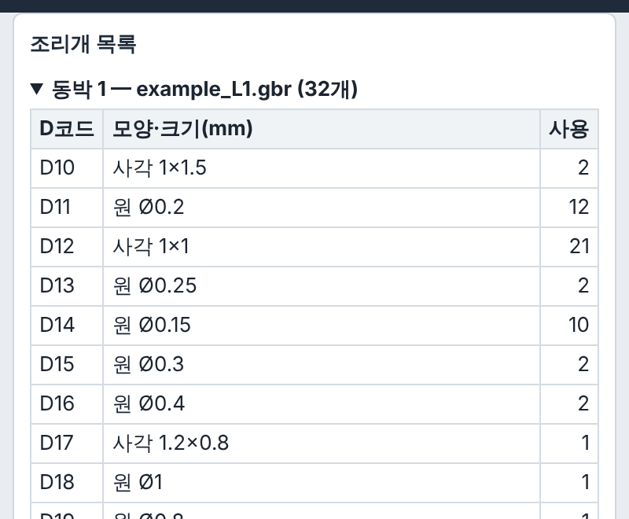
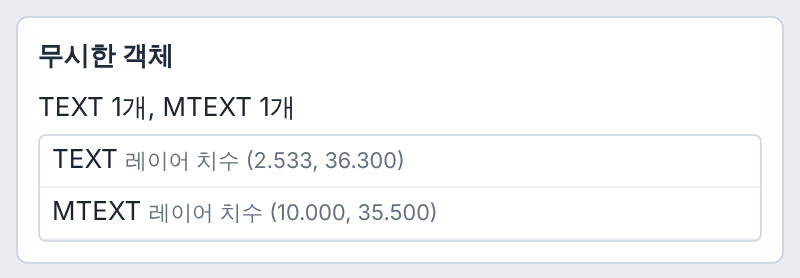
프로그램이 도면 객체를 어떻게 바꾸는지 알아 두면 결과를 확인하기 쉽습니다. 사진에서 흰 선은 원본 외곽선, 색칠된 면은 출력 결과입니다.
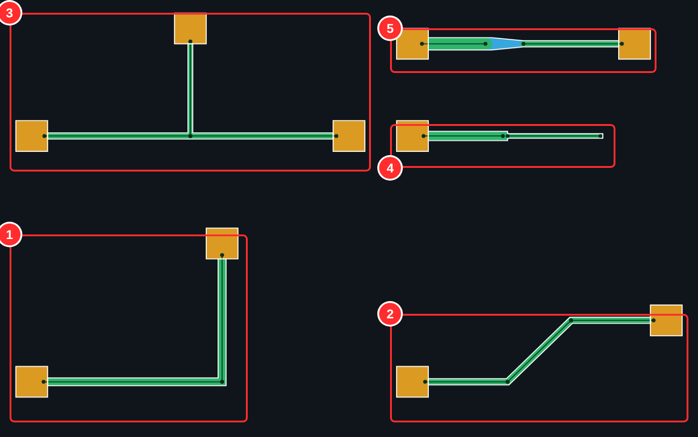
| 곳 | 처리 |
|---|---|
| 뾰족한 꺾임 | 둥근 선으로는 바깥 모서리가 둥글게 빠지므로, 그 모서리를 작은 영역으로 채웁니다. |
| 둥근 꺾임(R) | 꺾임 부분을 원본 호를 따라가는 영역으로 채웁니다. |
| 분기(T자 등) | 가지마다 선을 나눠 분기점까지 긋고, 모자라는 모서리는 채웁니다. |
| 폭이 바뀌는 곳 | 폭이 같은 구간끼리 선으로 나누고, 테이퍼 부분은 영역으로 냅니다. |
| 패드에 닿는 끝 | 선 끝을 패드 변에서 선폭의 절반만큼 패드 안으로 넣어, 둥근 끝이 패드에 가려지게 합니다. 패드가 좁아 들어가지 않으면 직각으로 마감하고 경고합니다. |
| 떠 있는 끝 | 선을 선폭의 절반만큼 줄이고 그만큼을 사각 영역으로 채워 직각으로 마감합니다. |
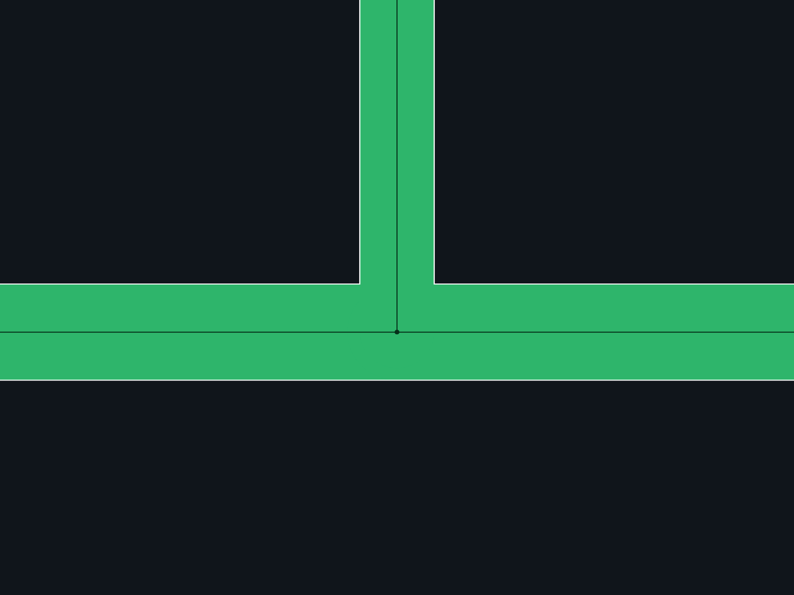
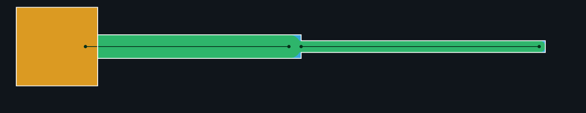
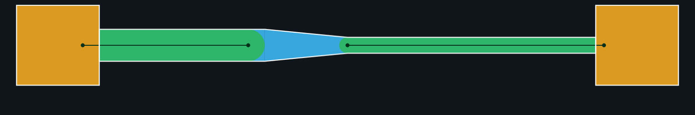
| 모양 | 출력 |
|---|---|
| 직사각형(0°/90°), 원, 오블롱(0°/90°) | 표준 조리개 플래시 |
| 둥근 모서리 사각형, 회전된 사각형·오블롱 | 조리개 매크로 플래시 |
| 타원 | 다각형으로 근사한 매크로 플래시(근사 오차를 조리개 목록에 표시) |
패드냐 배선이냐는 모양과 주변 관계로 정합니다.
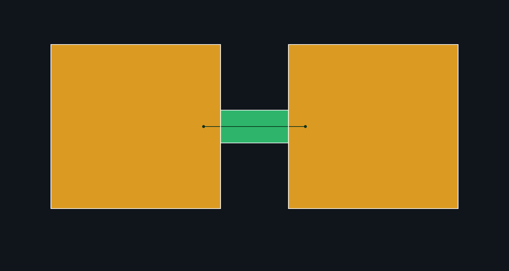
같은 모양·크기의 패드는 조리개 하나를 같이 씁니다(“조리개 공유 허용 오차” 이내). 자동 판정의 이유는 객체를 눌렀을 때 창의 “자동 판정” 옆 괄호에 나옵니다.
선으로도 플래시로도 낼 수 없는 객체(넓은 동박면, 모양이 복잡한 도형, 되돌린 결과가 원본과 기준 넘게 다른 배선)는 외곽선 그대로 영역으로 냅니다. 분홍색으로 보이며, 경고 목록 “영역으로 출력(대체)”에 이유와 함께 나옵니다. 모양은 원본과 같지만 선이 아니므로 CAM에서 선폭 보정 대상이 되지 않습니다.
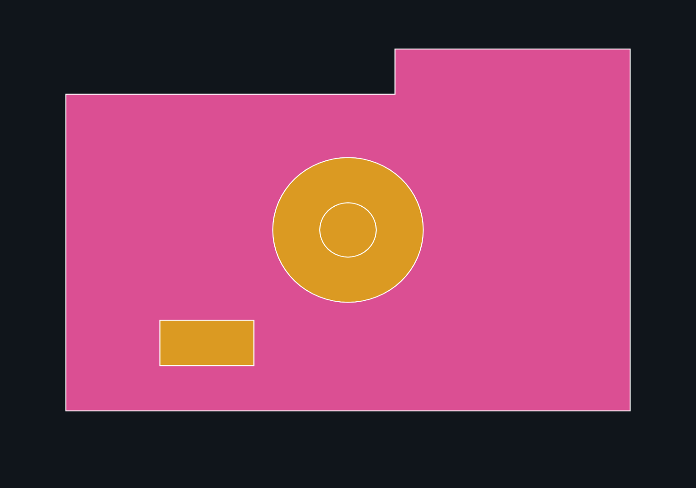
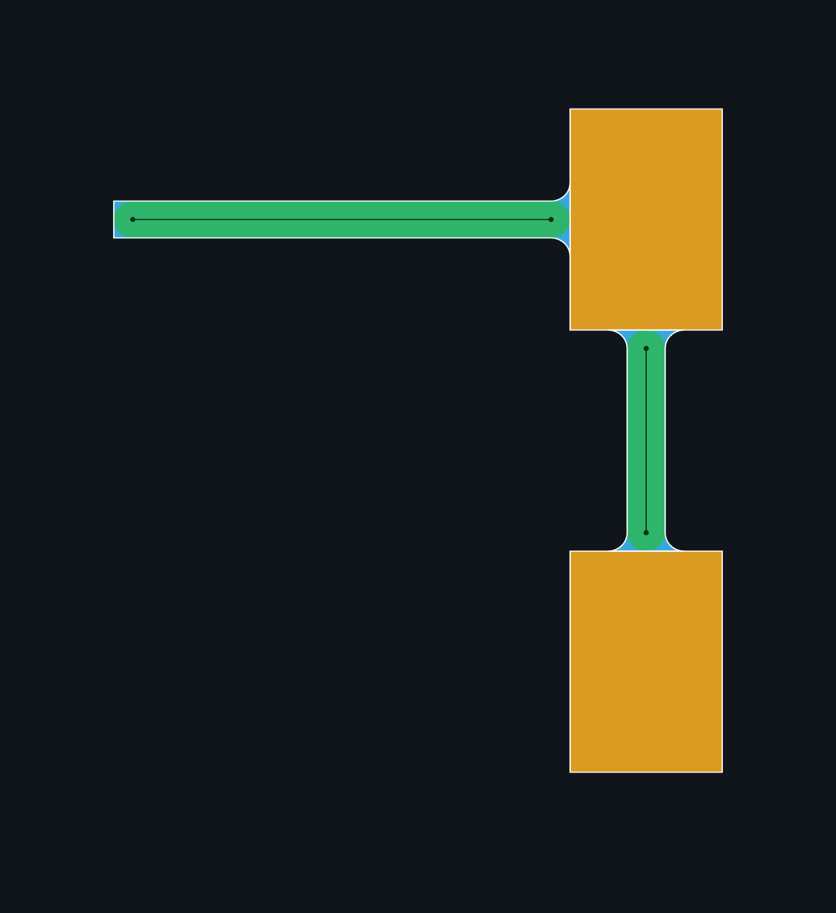
패드와 배선을 한 닫힌 폴리선으로 그린 도면에서는, 옵션 배선과 합쳐진 사각 패드 떼어내기(기본 켜짐)가 패드 부분을 찾아 떼어 냅니다. 떼어 낸 패드는 플래시로, 남은 부분은 배선으로 냅니다.
패드로 보는 조건: 네 모서리가 직각인 가로세로(0°/90°) 사각형이고, 배선이 들어오는 입구가 모서리에 닿지 않으며, 긴 변÷짧은 변이 패드 판정 비율 이하.
동박 층에서만 동작합니다. 둥근 모서리 패드와 회전된 패드는 떼지 않으며, 이런 경우에는 전체가 배선 복원 또는 영역으로 처리됩니다.
떼어 낸 패드는 경고 목록(초록)에 하나씩 나옵니다.
ODB++는 층·스텝·심벌을 폴더 구조로 담는 형식입니다. 이 프로그램에서는 똑같이 반복되는 부분을 스텝 하나로 묶어 반복 배치할 수 있어, 같은 무늬가 수만 번 반복되는 도면에서 파일이 크게 줄어듭니다.
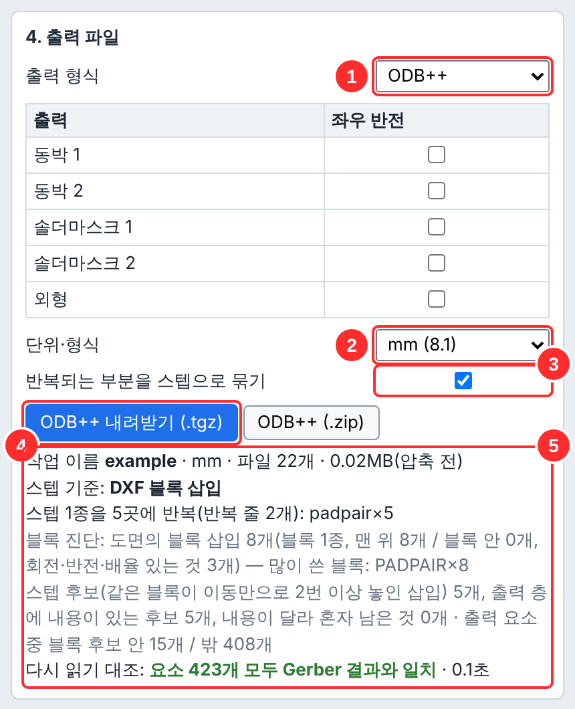
1 출력 형식을 ODB++로 바꾸고 변환을 누릅니다.
2 단위·형식을 고릅니다.
3 반복되는 부분을 스텝으로 묶기(기본 켜짐).
4 ODB++ 내려받기 (.tgz) 또는 ODB++ (.zip)을 누릅니다. 이때 ODB++를 만들고, 다시 읽어 대조한 뒤 내려받습니다.
5 결과 줄(8.3절).
| 단위·형식 | 내용 |
|---|---|
| inch (7.0, 호환) | 기본값. 단위 표시 없이 inch·mil로 적는 옛 형식입니다. 오래된 CAM을 고려한 선택이지만 실제 CAM에서 열어 확인한 적은 없습니다. |
| mm (8.1) | mm 단위임을 파일에 적는 형식입니다. CoreCAM에서 열리는 것이 확인된 형식입니다(스텝 구조 포함, 11장). |
반복되는 부분을 스텝으로 묶기를 켜면 다음 순서로 묶습니다.
예제 도면의 결과입니다(사진의 5).
| 표시 | 뜻 |
|---|---|
| 작업 이름 · 단위 · 파일 n개 · n MB(압축 전) | 만든 ODB++의 기본 정보. 스텝이 잘 묶이면 이 용량이 크게 줄어듭니다. |
| 스텝 기준: DXF 블록 삽입 / 반복 칸 자동 | 어느 방법으로 묶었는지. 반복 칸 자동이면 칸 크기(가로 × 세로 mm), 내용이 있는 칸 수, 요소 중 스텝 안에 든 비율이 함께 나옵니다. |
| 스텝 n종을 m곳에 반복(반복 줄 k개): 이름×횟수 … | 스텝 종류 수와 놓인 횟수. 종수가 적고 횟수가 많을수록 잘 묶인 것입니다. 반복 무늬 도면인데 종수가 지나치게 많으면 도면 좌표가 칸마다 미세하게 다른 것일 수 있습니다. |
| 스텝 묶음 없음 (이유) — 전부 panel 스텝에 적음 | 묶지 못해 전부 풀어 적었습니다. 괄호 안에 이유가 나옵니다. |
| 피치 진단(패드 기준 / 작은 요소 전부 기준) | 반복 칸 자동일 때만. 가로·세로 각각 찾은 피치(또는 “못 찾음”), 값 수, 서로 다른 값 수, 가장 흔한 간격과 그 비율. 비율이 높을수록 간격이 일정한 도면입니다. “한 번뿐이라 패널에 둔 칸” 수도 나옵니다. |
| 블록 진단 | 도면의 블록 삽입 수(블록 종류, 맨 위/블록 안, 회전·반전·배율 있는 것), 많이 쓴 블록, 스텝 후보 수, 내용이 달라 혼자 남은 후보 수, 출력 요소 중 블록 후보 안/밖 개수. “밖”이 대부분이면 동박이 블록 없이 그려진 도면입니다. |
| 다시 읽기 대조 | 만든 ODB++를 다시 읽어 변환 결과와 요소 하나하나를 견준 결과. 요소 n개 모두 Gerber 결과와 일치(초록)여야 정상입니다. 빨간 “불일치”가 나오면 그 파일은 쓰지 말고 문의해 주세요. |
아래는 개발 중 4코어 PC의 크롬 계열 브라우저에서 잰 값입니다. PC 성능과 도면에 따라 달라집니다.
| 도면 | 변환 시간 | 비고 |
|---|---|---|
| 예제 도면(닫힌 도형 96개) | 1초 미만 | |
| 시험 도면(도형 약 11만 개, 긴 레일에 패드가 한 외곽선으로 붙은 형태) | 여러 코어 약 15초, 한 코어 약 16초 | 브라우저 전체 메모리 최고 약 2.6GB(여러 코어), 1.8GB(한 코어). 객체 하나를 눌러 바꾸기 약 1.7초 |
| LED 패널 도면(닫힌 도형 약 37만 개) | 여러 코어 약 63초, 한 코어 약 107초 | Gerber 한 층 약 180MB, zip 약 24MB |
| 사용자 실제 도면(동박 객체 약 13만 개) | 여러 코어 약 51초, 한 코어 약 71초 | 메모리 오류 없음 |
| 증상(화면의 글) | 원인과 조치 |
|---|---|
| 바이너리 DXF는 읽을 수 없습니다 … | 오토캐드에서 다른 이름으로 저장 → AutoCAD 2000 DXF(글자 형식)로 다시 저장합니다. 저장 옵션에서 형식이 “ASCII”인지 확인합니다. |
| DXF를 읽지 못했습니다: … / 파일을 읽지 못했습니다: … | DXF가 아니거나 손상된 파일입니다. DWG 파일은 열 수 없으므로 DXF로 저장해 주세요. |
| 닫힌 도형(폴리선·원 등)을 찾지 못했습니다 … | 도면이 선·호·글자뿐이거나 폴리선이 모두 열려 있습니다. 무시한 객체를 확인하고, 오토캐드에서 외곽선을 닫힌 폴리선으로 만들어 주세요. 끝점이 정확히 맞닿은 열린 선은 자동으로 이어 주지만, 조금이라도 떨어져 있으면 이어지지 않습니다. |
| 참고: 이 파일은 AC… 형식입니다 | 오토캐드 2000 형식이 아니지만 읽기는 시도한 것입니다. 결과가 이상하면 2000 형식으로 다시 저장해 보세요. |
| 파일을 끌어다 놓아도 반응이 없음 | .dxf 파일인지 확인하고, 파일 선택 버튼으로 열어 보세요. |
| 증상 | 원인과 조치 |
|---|---|
| 도면을 열었는데 미리보기가 비어 있음 | 아직 변환하지 않은 것입니다. 변환을 누르세요. |
| “출력 대상 레이어가 없습니다” | 모든 레이어가 “출력 안 함”입니다. 레이어 표에서 출력 대상을 고르세요. 레이어 이름으로 추정하지 못하면 이렇게 됩니다. |
| 어떤 층이 통째로 빠짐 / 내려받기 버튼이 눌리지 않음 | 그 출력 대상으로 지정된 레이어가 없거나, 설정을 바꾼 뒤 아직 변환하지 않았습니다(주황색 띠 확인). |
| 레이어 표의 객체 수가 0 | 그 레이어에 닫힌 도형이 없습니다. 객체가 블록 안에 있으면 블록을 삽입한 레이어가 아니라 블록 안에서 그린 레이어로 집계될 수 있습니다. 무시한 객체도 확인하세요. |
| 크기가 25.4배 크거나 작음 | 도면 단위를 mm 또는 inch로 직접 고릅니다. 요약의 “전체 크기”로 확인합니다. |
| 패드가 배선으로(또는 반대로) 나옴 | 몇 개뿐이면 눌러서 바꿉니다(5.4절). 같은 종류가 많으면 “패드 판정 비율”을 조정합니다. |
| 배선이 분홍색(영역)으로 나옴 | 경고 “영역으로 출력(대체)”의 이유를 봅니다(6.2절). 모양은 원본과 같습니다. |
| 동박면의 구멍이 메워져 나옴 | 안쪽 폴리선을 “빈 곳으로” 지정하거나 “번갈아” 옵션을 켭니다(5.5절). |
| 글자가 안 나오거나 네모로 나옴 | 글자 레이어가 출력 대상인지, 글자 옵션이 켜져 있는지 확인합니다. 한글 등 글꼴에 없는 글자는 네모로 나옵니다(7.6절). |
| 눌러서 바꾼 판정이 사라짐 | 출력 형식을 바꾸었거나 ODB++의 스텝 묶기를 켜고 껐거나, 도면을 다시 열었기 때문입니다. |
| 증상 | 조치 |
|---|---|
| 회전된 패드·둥근 모서리 패드·타원이 안 보이거나 모양이 틀림(CAM이 매크로를 못 읽음) | 매크로(AM) 대신 영역으로 내기를 켜고 다시 변환합니다. 그 패드는 플래시가 아니라 영역이 됩니다. |
| 둥근 꺾임 주변의 작은 조각이 깨지거나 엉뚱한 원이 생김(CAM이 영역 안의 호를 잘못 읽음) | 채움 영역의 호를 꺾은선으로 내기를 켜고 다시 변환합니다. |
| 크기가 다르게 열림 | Gerber는 mm, 소수 6자리입니다. CAM의 가져오기 설정이 자동 인식이 아니면 단위 mm, 자릿수 4.6, 앞자리 0 생략으로 맞춥니다. ODB++라면 단위·형식을 다른 쪽으로 바꿔 보세요. |
| 구멍(빈 곳)이 메워져 보임 | 빈 곳은 음극성으로 냅니다. CAM에서 음극성 표시가 꺼져 있지 않은지 확인합니다. |
| ODB++가 열리지 않음 | 단위·형식을 mm (8.1)로 바꿔 보거나(.tgz가 안 되면 .zip), 반복되는 부분을 스텝으로 묶기를 끄고 만들어 봅니다. |
이 프로그램은 개발자가 사용자의 실제 도면을 볼 수 없는 조건에서, 직접 만든 예제·시험 도면으로 검증하며 만들었습니다. 아래는 빌드 — 기준으로 실제로 확인된 것과 아직 확인하지 못한 것입니다.
권장: 처음 쓰는 CAM이나 처음 쓰는 형식이라면, 작은 도면(또는 예제 도면)의 출력부터 CAM에서 열어 모양·크기·층을 확인한 뒤 큰 도면에 쓰시기 바랍니다.
| 구분 | 한계 |
|---|---|
| 입력 | 바이너리 DXF·DWG는 읽지 못합니다. 타원·스플라인으로 된 HATCH 경계, 폴리선으로 그린 타원은 인식하지 않습니다(영역 또는 무시 목록). |
| 글자 | 내장 글꼴은 영문·숫자·기호뿐이며 한글은 안 됩니다. 글자 모양은 오토캐드와 다릅니다. MTEXT의 서식 코드는 지우고, 폭에 맞춘 자동 줄바꿈은 하지 않습니다. |
| 패드 떼기·겹침 검사 | 배선과 합쳐진 패드 중 직각 사각(0°/90°) 패드만 뗍니다(둥근 모서리·회전 패드는 떼지 않음). 같은 층 안의 겹침만 검사합니다. 다른 층끼리의 관계(패드와 마스크 개구부의 어긋남 등)는 검사하지 않으므로 미리보기에서 눈으로 확인해야 합니다. |
| Gerber | X2 속성과 반복 배치(SR)를 쓰지 않습니다. 반복 무늬가 많은 도면은 파일이 큽니다(둥근 꺾임마다 채움 영역이 생깁니다). |
| ODB++ 스텝 | 회전·반전·배율이 있는 블록 삽입은 스텝으로 묶지 못합니다. 반복 칸 자동은 패드가 한 가지 간격의 격자로 놓인 도면에서만 동작하며, 좌표가 칸마다 미세하게 다르면 스텝 종류가 많아질 수 있습니다. |
| 검증 범위 | 프로그램의 형상 비교는 “출력 파일의 모양이 원본 도면과 같은가”를 봅니다. 도면 자체의 설계 오류나 제조 규칙(최소 선폭·간격 등)은 검사하지 않습니다. |